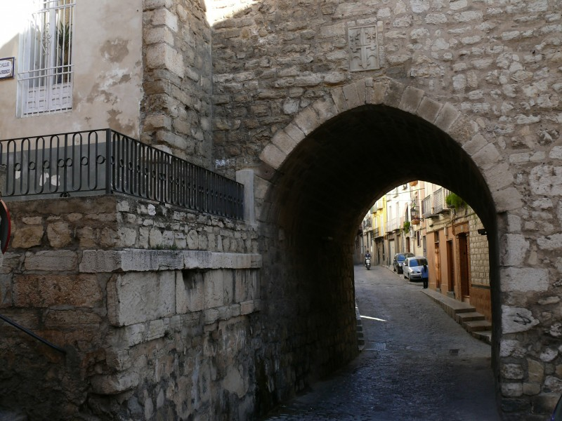

El arco de San Lorenzo es parte de la extinta Iglesia de San Lorenzo, erigida entre los siglos XIII y XIV. Está situado en la confluencia de las calles Almendros Aguilar y Madre de Dios. Su interior atesora azulejos y artesonados moriscos, así como una pequeña capilla. Es sede de la Asociación Amigos de San Antón.
Se dice que aquí se veló el cadáver de Fernando IV el Emplazado, muerto trágicamente en Jaén el 7 de septiembre de 1312. Por este motivo se realizó a lo largo de los siglos un responso en el Arco durante los entierros de los obispos de la ciudad.
Aquí se bautizó, el 6 de julio de 1555, a Maximiliano de Austria, tío de Carlos I.
En el Arco está sepultado Juan de Olid, secretario del Condestable Miguel Lucas de Iranzo. La pequeña capilla sirvió de titular del cercano Hospital de la Madre de Dios, fundado en una casa aledaña en 1491 por don Luis de Torres, hijo del Condestable Iranzo. Fue también capilla del primer Seminario Conciliar de Jaén, fundado en 1620.
En 1825 la iglesia de San Lorenzo se derrumbó a causa de su abandono, quedando sólo en pie el Arco. La parroquia y el archivo se trasladaron a la iglesia de San Bartolomé, y su tesoro artístico se reparte entre San Bartolomé y la Merced.
Fue declarado Monumento Nacional en 1877 gracias al trabajo de un grupo de jiennenses que se enfrentó a una campaña en pro de su total demolición.
La iglesia era de una sola nave y se situaba en lo que hoy son los números 2 y 4 de la calle San Lorenzo. Destacaba por sus tesoros artísticos, entre ellos un retablo de Ánimas, una tabla de Santo Domingo y San Bartolomé de la Cuesta y el legendario lienzo del Cristo de las Injurias, todos ellos depositados actualmente en la cercana iglesia de La Merced.
La capilla está cubierta de bóveda de ladrillo, en cuyo centro hay un colgante de yesería del que engancha una lámpara votiva. Toda la pared de la capilla está cubierta por un zócalo de alicatado mudéjar de gran valor artístico.
Sobre el altar hay un nicho de arco rebajado que alberga un crucifijo sobre fondo de damasco rojo. Este nicho está decorado con fina yesería mudéjar que recorre a manera de festón todos los paneles de azulejos. En los dos laterales de la entrada hay una inscripción en letra gótica que dice:
"Esta capilla de Jesús Nazareno es.../...del Hospital de la Madre de Dios"
| Precio | |
|---|---|
| Entrada General | Gratuita |
| Horario | |
|---|---|
| Domingos | 10:00-12:00 |